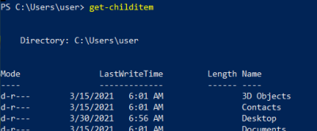
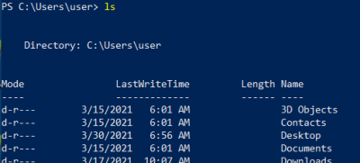

Get-ChildItem (dir, gci, ls)
Get-ChildItem (ls)example find a file with a given name:-recurse (-r for short) at a given start directory [dir] for a name that matches [string]
ForEach-Object(%) found that matches, we can echo the object ($_) fullname, which shows us the path of the file
PS> get-childitem -recurse [dir] [string] | % {echo $_.fullname}
PS> get-childitem -recurse "C:\Users\danie\Desktop" "webcast*" | % {echo $_.fullname}
Get-Childitem -recurse (ls -r) → lists files within a directory recursively,
-File *.txt → search for files types of .txt . We’ll then pipe that to
ForEach-Object (%) → for each object found
Select-String(sls) → For each value of the variable in the pipeline ($_), that in this case are paths, search for the string “pass*” in files
Get-ChildItem -recurse C:\users\user\Documents -File *.txt | % {Select-String -Path $_ -Pattern pass* }
use it for searching files like we have done
hereexamplethe “Get-ChildItem” cmdlet alone, simply lists items in a directory,
because of that can be alternatively called by issuing the “ls” command, which is an alias for the Get-ChildItem cmdlet.
 